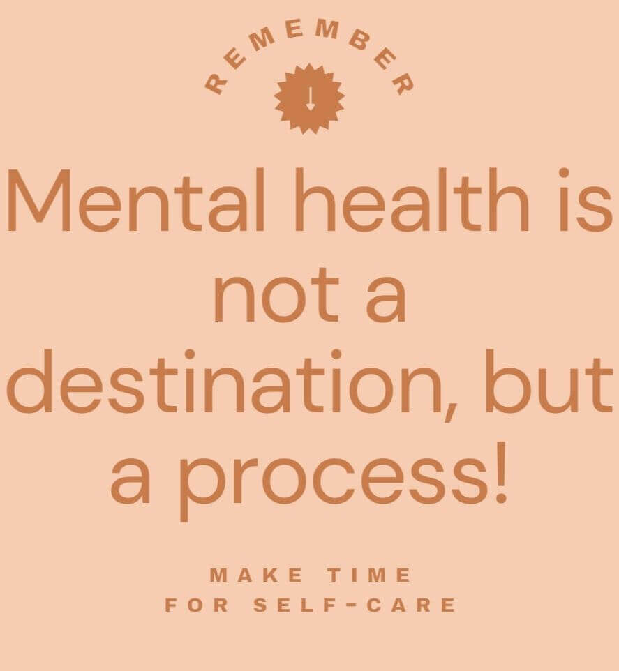
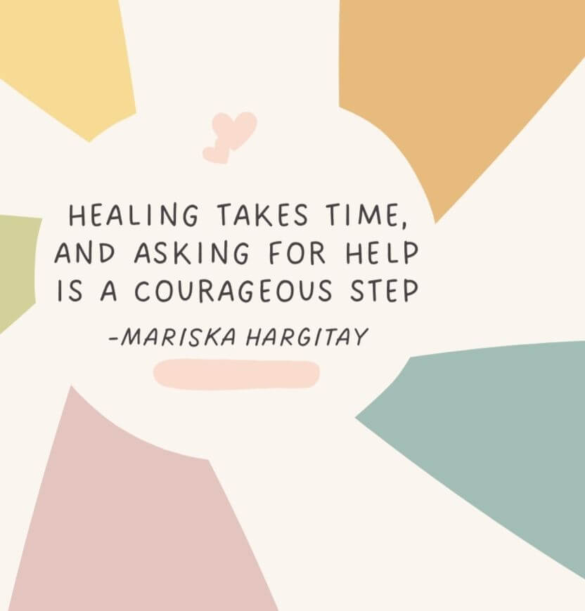
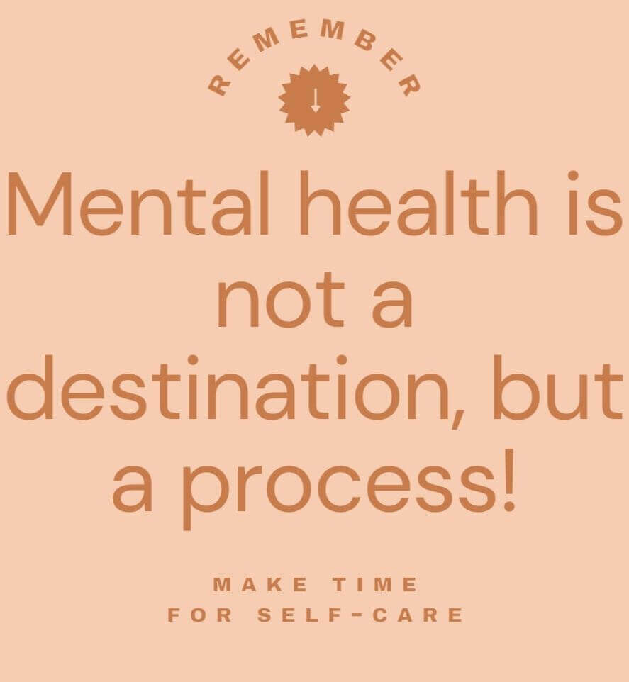
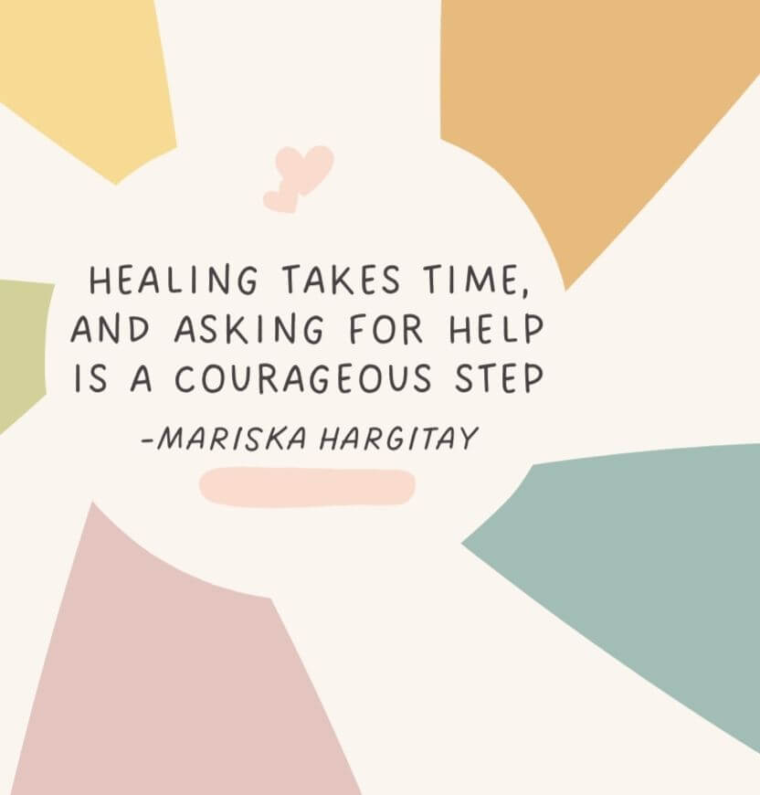

School life, hanging out with friends, scrolling online - it’s a lot to handle as a teen right now.
We get it, someone’s always watching, people care, so you’re never really on your own. Pick up small ways to grow tougher each day, bit by bit. Check out real talks, helpful tips, stuff built just for where you're at.
 



Now and then, life feels confusing. Pressure, worry, being on your own - each person handles these differently. Here’s a place/page for you to check in with yourself: figure out what you're feeling, dig into the reasons behind it, yet also learn ways to deal. Once you get clearer about your emotions, things start feeling more manageable.
Explore what you’re feeling, why it happens, and how to take small steps that make a big difference. Learning about yourself is powerful — and you don’t have to do it alone.You're not alone in this. Listen to peers just like you who've dealt with stress or trying to fit in, too much online, and just stuff that hits close to home. If you need advice, a real-life moment, or simply someone who understands - you’ll find it here. Sharing opens doors, helps us heal, builds grit.
Read honest stories about overcoming anxiety, school stress, and tough emotions. Their experiences show that healing isn’t perfect — but it’s possible, and it’s worth it.Speaking up takes courage. It could be a short talk, an online tool, or round-the-clock care - choices exist just for teens in NZ. Check what fits: your school mentor, useful apps, phone lines, or something you try now. You’re not meant to handle everything by yourself.
Explore support options including school counsellors, trusted apps, helplines, coping tools, and ways to reach out safely. Asking for help is a sign of strength.